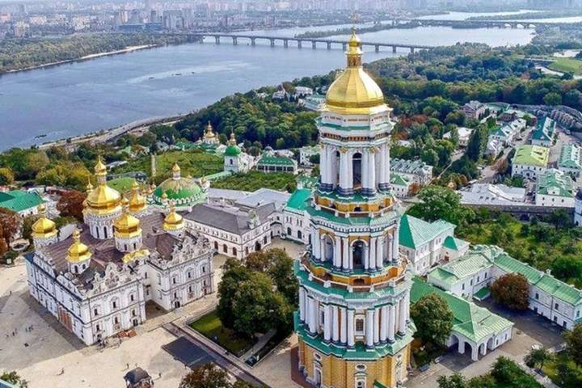
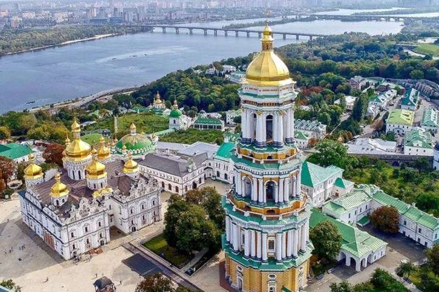
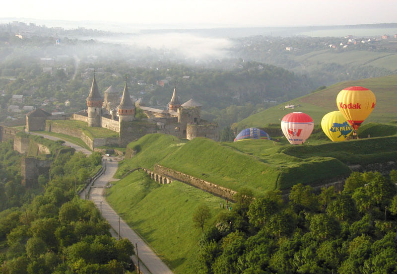
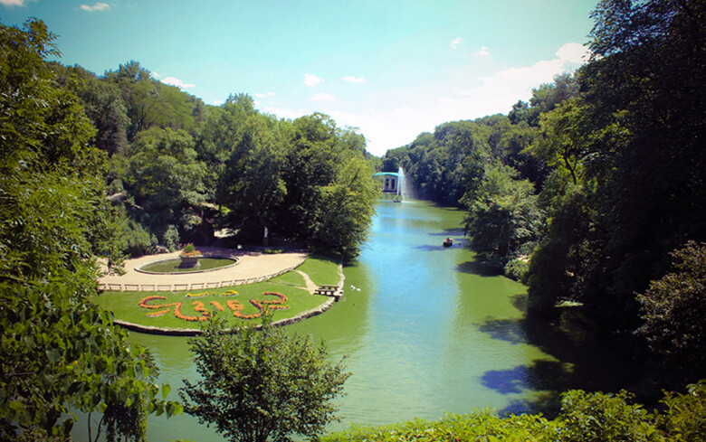
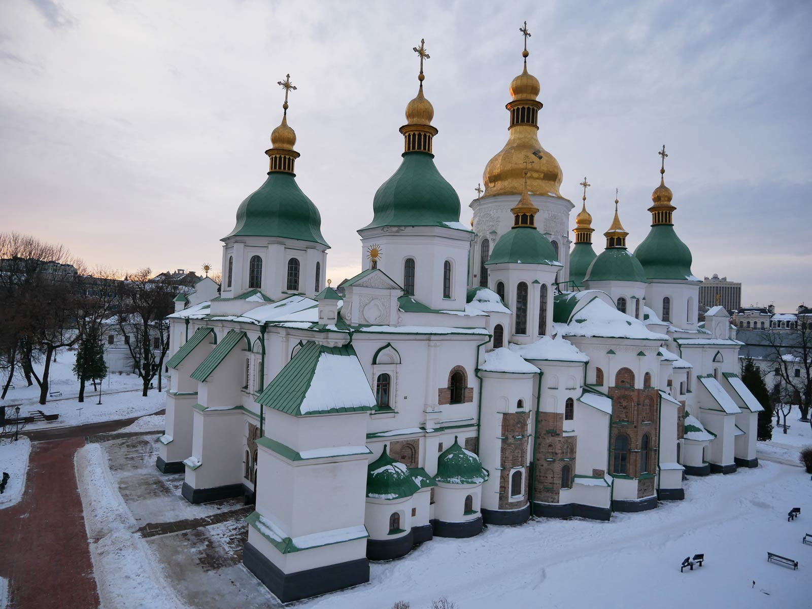
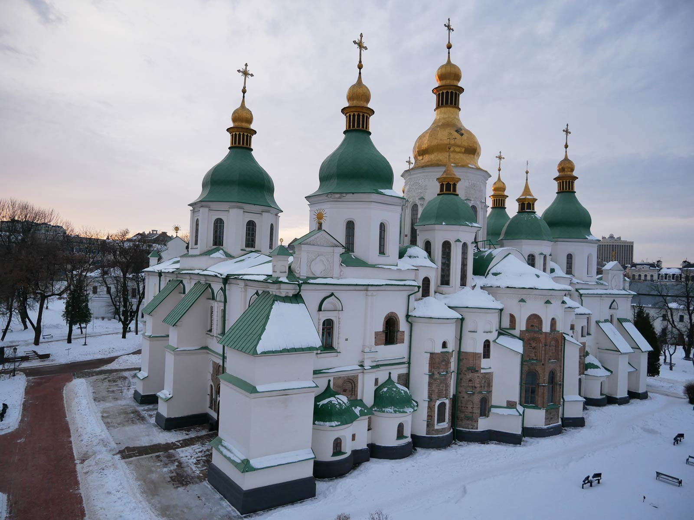
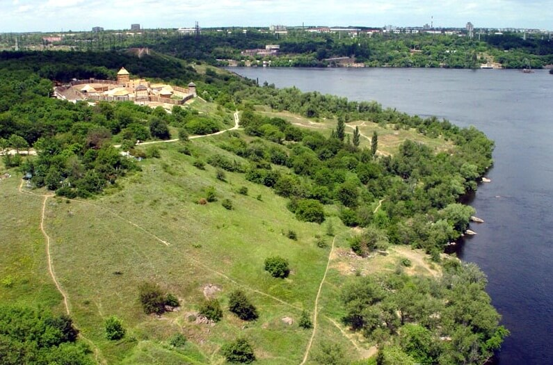

Києво-Печерська Лавра

 

Сьогодні Національний Києво-Печерський історико-культурний заповідник – найбільший музейний комплекс України, де зосереджено 144 споруди, 122 з яких – пам’ятки історії і культури. Серед них – 2 унікальних підземних комплекси, храми, пам’ятки архітектури XI–XIX ст., численні виставкові приміщення.
Місто Кам’янець


Кам’янець-Подільський – місто, що зберегло дух середньовіччя. Своєрідність і унікальність його полягають у гармонійному поєднанні ландшафту з містобудівною структурою середньовічного міста, в якому військові інженери, використовуючи чудові природні властивості, створили фортифікаційну систему, що не має аналогів у Європі.
Кам’янець-Подільський хоч не є обласним центром, проте займає третє місце після Києва та Львова за кількістю пам’яток старовини і культури.
Софіївка


Численним відвідувачам дендропарк «Софіївка» відомий як туристична перлина України, музей садово-паркового мистецтва, місце, де можна поринути у казковий романтичний світ природи, краси і кохання…
Національний дендрологічний парк „Софіївка” – одне з найвидатніших творінь світового садово-паркового мистецтва кінця ХVІІІ – першої половини ХІХ ст. Парк розкинувся на площі майже 180 га на узбіччі старовинного міста Умань Черкаської області.
Софія Київська

 

Софія Київська пережила та побачила на своєму віку стільки, що про це можна говорити нескінченно. Софія – це справжня культурна скарбниця: тут і архітектура, і скульптура, і малярство, і ювелірне мистецтво зібрані в один потужний акорд…
Найвеличнішою спорудою Національного заповідника „Софія Київська” є Софійський собор – всесвітньо відома пам’ятка архітектури і монументального живопису ХІ ст. У 1990 р. собор разом ансамблем монастирських споруд на його подвір’ї занесено до Списку всесвітньої спадщини ЮНЕСКО.
Херсонес Таврійський


Історія Херсонеса є частиною історії Давньої Греції, Давнього Риму, Візантії, Київської Русі. Адже саме тут, у Херсонесі, згідно з літописними даними, відбулося велике Таїнство – Хрещення Київського князя Володимира, який потім поширив християнство на всю Київську Русь…
Херсонес Таврійський – таку назву носило місто, засноване давньогрецькими колоністами понад дві з половиною тисячі років тому на південному заході Кримського півострова.
Хортиця


Острів Хортиця – найбільший острів на Дніпрі, унікальність якого – у рідкісному поєднанні на одній території різноманітних природних комплексів, пам’яток геології, культури, історії…
Основу найбільшого острова на Дніпрі (довжина 12, ширина, в середньому, 2,5 км, загальна площа – 2360 га) складають граніти і гнейси, яким близько двох мільярдів років. Природна унікальність Хортиці в тому, що тут у мініатюрі представлені зразки всіх ландшафтних зон України.
Хотинська фортеця


Хотинська фортеця – свідок численних війн та баталій. Протягом століть вона була центром розвитку ремесел і торгівлі, культури та економіки. Ця середньовічна красуня може багато розповісти тому, хто побажає вислухати її…
- Довідково